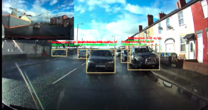

ML Automotive Safety: Collision Detection
A collision-warning retrofit that estimates the distance and closing speed of the vehicle ahead and turns them into a green / yellow / red alert. There are two implementations: YOLOv8 vision in Python and an ultrasonic Arduino unit, both driven by the Berkeley PATH warning model. Pitched at Campus Startup Night.


Vision: distance from a single camera
With one camera there's no stereo depth, so yolo_rearalgo.py uses the pinhole camera model. A car is about 1.8 m wide, so if its bounding box is w pixels wide and the focal length is f ≈ 800 px, the distance is:
Differencing that distance between frames (Δd/Δt, using wall-clock timestamps) gives the lead vehicle's relative speed. YOLOv8n runs at a confidence threshold of 0.45, and the alert is drawn onto the video as colour-coded text.
The PATH model
The warning distance comes from the Berkeley PATH collision-warning algorithm. It adds the distance you'd cover during your reaction time to the braking-distance difference between the two vehicles, plus a minimum buffer:
The alert level then comes from the ratio d / R, so the system warns earlier at higher closing speeds, which is exactly when you need more time.
Embedded: the Arduino unit
rearalgorithm.ino is the hardware prototype. An HC-SR04 fires a 10 µs trigger pulse. pulseIn() measures the echo, and distance is duration × 0.034 / 2 cm (speed of sound, there and back). Two readings 100 ms apart give the closing speed.
// PATH (Berkeley) warning distance Rwarning = 0.5 * ((vF*vF/alpha) - (vL*vL/alpha)) + (vF * tau) + Rmin; float ratio = distance / (Rwarning * 100); if (ratio < 0.7 && vF >= 0.3) red(); else if (ratio < 0.85 && vF >= 0.2) yellow(); else green();
Below 0.05 m/s the unit skips the calculation and stays green, so a parked car doesn't set it off. I tuned the parameters for bench testing: α = 6 m/s², and τ = 0.7 s to make the LEDs react faster.